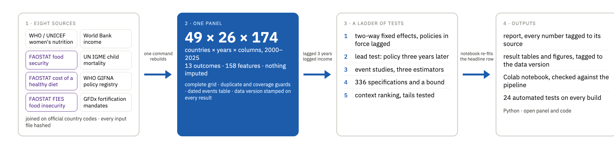

Ink and Iron
Does the policy record predict maternal anaemia in sub-Saharan Africa? We built a 49-country panel from a dozen public datasets, tested the question every way we could think of, and found that the paper trail does not measurably move the number. What does is context, and what is missing is delivery data.
Three questions, three findings
Where it is most concerning
Anaemia in women fell from 44% to 37% across the region between 2000 and 2015, then turned: it is higher in 2023 than in 2015 in 37 of 49 countries. A concern score over 194 countries put three of the five most concerning in sub-Saharan Africa. Income explains under five per cent of the spread between countries.
The policy record does not move anaemia, measurably
Inside a country, one more anaemia policy in force is followed three years later by −0.2 percentage points, indistinguishable from zero, and the answer holds across lags, controls, estimators and 336 specifications. Benefits larger than about half a point per policy are ruled out; smaller ones could not have been detected. The one row off zero is the lead test: policies adopted later "predict" anaemia now, the fingerprint of governments reacting to trends.
Who beats their context, and it is not the paper trail
Income, fertility, malaria, urbanisation, sanitation, sub-region and terrain explain 81% of the differences in levels. Nigeria, Namibia, Cameroon, Ghana and Liberia sit six to ten points below the level their context predicts; on the books, they report the same policy record as the countries above it.
What we built
Not a chart to believe but a test that can be repeated. One command rebuilds the panel from pinned inputs, runs the ladder of tests and writes a report in which every number links to the script and the statistic that produced it, stamped with the data version. A Colab notebook re-fits the headline model to the same number. Anyone can add a country, a year or a delivery series and re-run.

Explore
The deck
The presentation as a scroll page: hook, team, problem, method, the three findings, the tool, recommendations.
The dashboard
Filters over the same results: map, ranking, trends, the coefficient ladder and its checks, the tails.
The repository
Code, pinned inputs with provenance, the panel, the report with every number tagged, and the notebook.
Team Primary Pea
Ramya
Presentation lead and timeline; the deck.
Alison
UNICEF women's nutrition EDA and the concern score.
Hope
World Bank income and food-insecurity data; the confounders.
Saarah
The country panel, the models, the tests, this site.
Tiana
The policy feature table and the maternal-nutrition background.